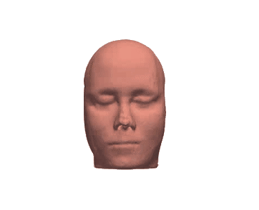
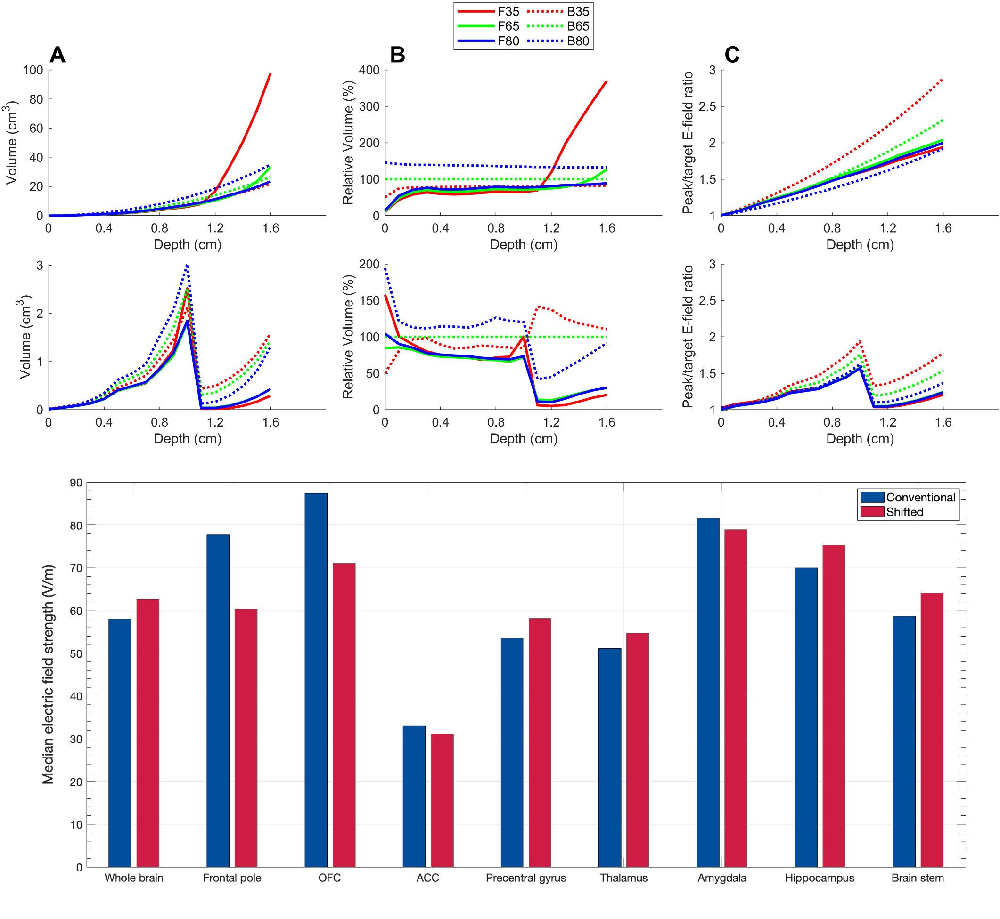

Goal
Use anatomy-specific finite-element models to simulate tDCS and TMS stimulation of the brain.
Process
Generate Head Model

Script FEA Simulation

Analyze Results

Finite Element Analysis
MATLAB
Large-Scale Data Analysis
Data Visualization
Bash Programming
Technical Communication